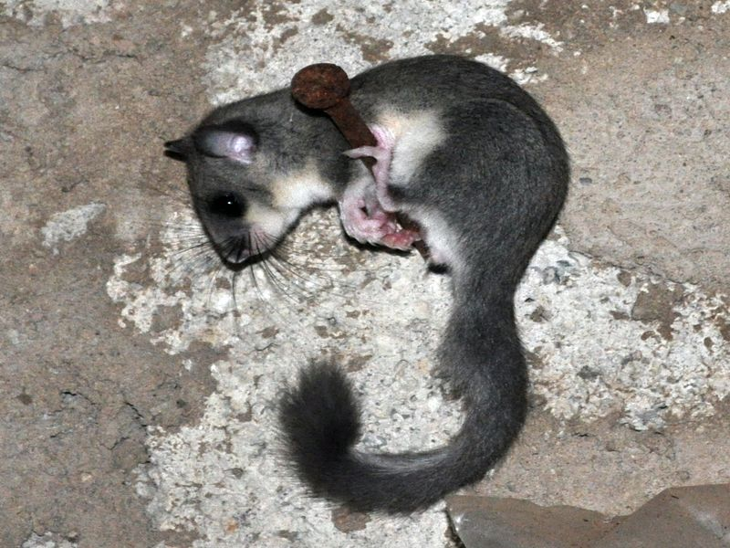

Siebenschläfer
Glis glis
In Baumhohlen und Nistkästen rund um das Ried zieht der Siebenschläfer seine Jungen auf. Als Nahrung dienen ihm Nüsse, Baumsamen, Früchte sowie tierische Kost. Er hält seinen Winterschlaf von November bis Mai in Erdhöhlen unter Bäumen oder in anderen geschützten Verstecken. Auch Forsthütten und andere menschliche Behausungen bewohnt der größte Vertreter unserer Bilche ganzjährig als Untermieter und raubt so Zeitgenossen den Schlaf.